충전하는 동안,
휴대폰이 탁상시계가 됩니다
충전기를 꽂으면 PlugStay가 저절로 떠서 큰 시계, 타이머, 날씨, 음악, 위젯, 쉼 화면을 보여줘요. 침대 옆에서도, 책상 위에서도 그냥 세워 두기만 하면 됩니다.
좌우로 테마, 위아래로 화면
시계, 타이머, 인포, 사진, 날씨, 플레이어, 쉼&생활, 듀얼, 게임. 9가지 테마에 화면이 34가지 있어요. 아래는 실제 휴대폰에서 캡처한 화면입니다.
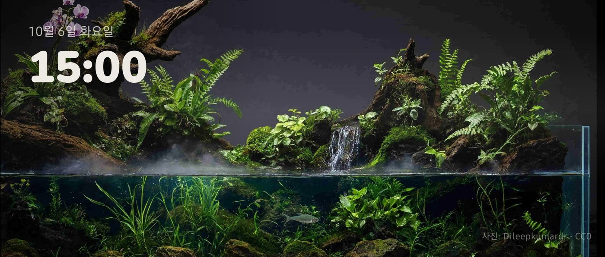
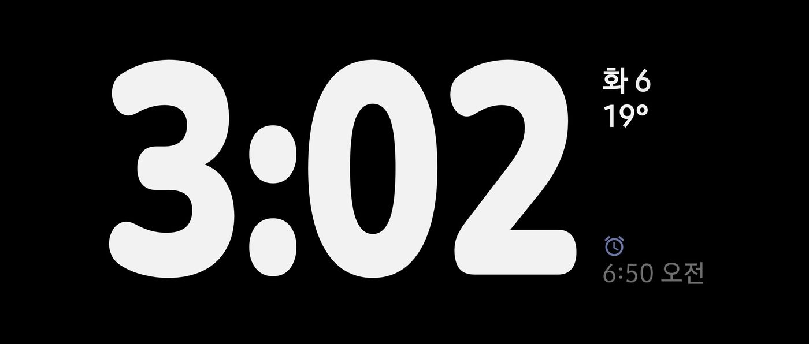
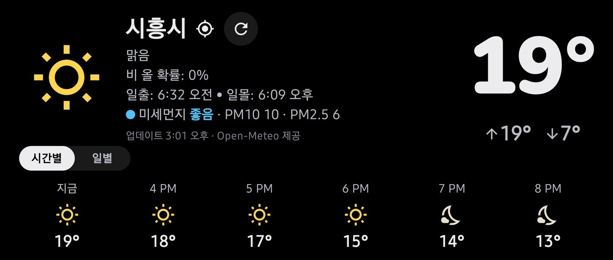
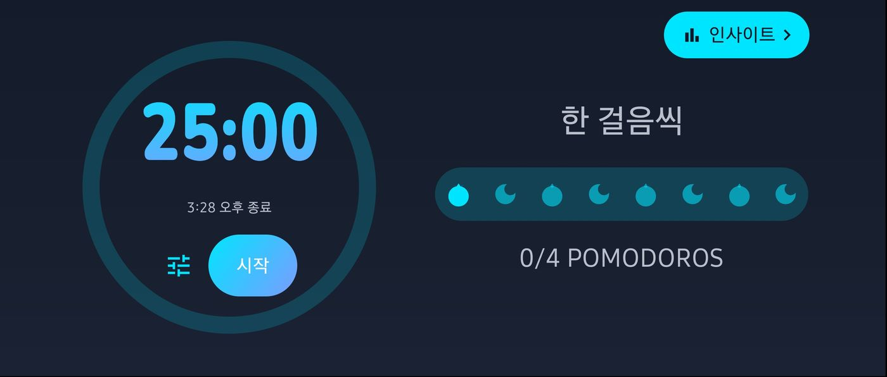
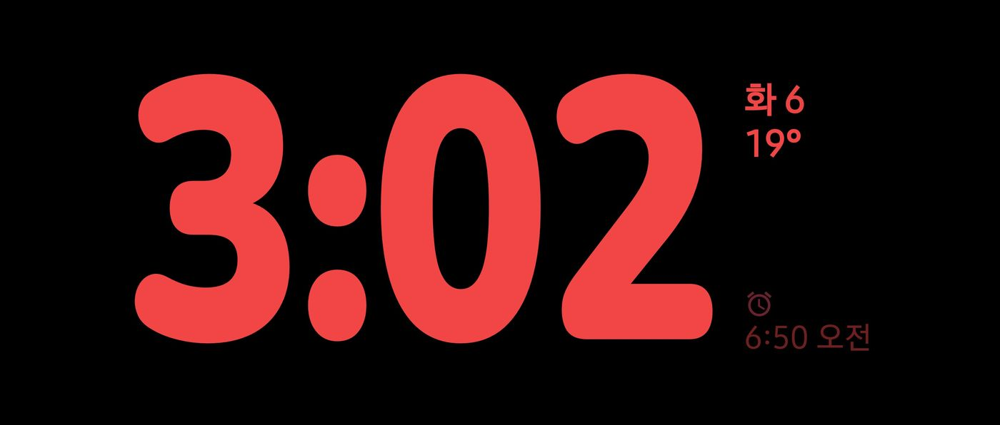
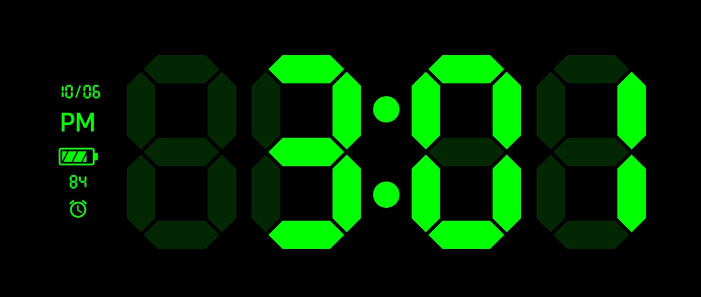
새로 들어온 화면
테스트 기간 동안 화면이 25가지에서 34가지로 늘었어요. 업데이트하면 바로 써 볼 수 있어요.
- 듀얼위젯 두 칸
시계, 아날로그 시계(원형·네모·다이버), 달력, 음악, 인포 위젯을 칸마다 골라 나란히 띄워요.
- 게임턴 타이머·대국 시계
보드게임 차례를 여러 명이 돌아가며 재거나, 둘이 마주 앉아 대국 시계로 써요.
- 타이머WOD 타이머
For Time·AMRAP·EMOM·Tabata 운동 타이머예요. 운동하는 모습을 영상으로 남길 수도 있어요.
- 인포오늘의 루틴·큰 배터리
매일 할 일을 체크해요. 뽀모도로·운동을 마치면 저절로 체크돼요. 충전 중인 배터리도 큼직하게 보여줘요.
- 쉼&생활LED 무드·전광판
LED 조명 화면, 그리고 원하는 문구를 색·스타일·속도를 골라 흘려보내는 전광판이에요.
- 플레이어노래방 가사
재생 중인 곡의 가사를 노래방처럼 크게 따라가며 보여줘요.
꽂으면 뜨고, 뽑으면 닫혀요
설정에서 자동으로 띄우기를 켜 두면, 앱을 열 필요가 없어요.
- 충전기를 꽂으면
잠금화면이나 꺼진 화면에서도 대시보드가 바로 떠요. 충전 중 가로로 세울 때만 띄우도록 고를 수도 있어요.
- 세워 두고 쓰다가
좌우로 넘겨 테마를, 위아래로 넘겨 화면 모양을 바꿔요. 화면 전체가 조금씩 움직여 번인을 막아요.
- 뽑으면 닫혀요
충전기를 뽑거나, 정한 시각이 되거나, 정한 시간이 지나면 자동으로 닫히게 할 수 있어요. 케이블이 잠깐 빠져도 바로 닫히지 않게, 뽑은 뒤 기다릴 시간도 고를 수 있어요.
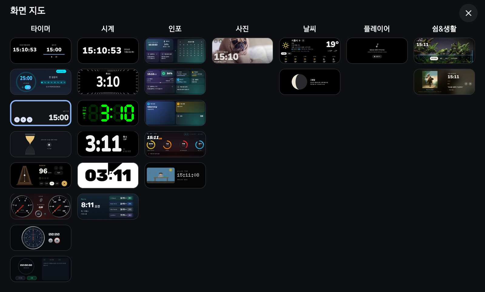
한눈에 고르는 34개 화면
- 화면 지도모든 화면을 썸네일로 보고 바로 골라요.
- 야간 모드어두워지거나 정한 시간이 되면 색을 바꿔요.
- 번인 방지밤새 켜 둬도 화면이 상하지 않게 위치를 조금씩 옮겨요.
- 폴더블 지원펼치거나 반쯤 접으면 두 칸에 서로 다른 화면을 띄워요.
- 처음 쓰는 분도 쉽게첫 실행 때 넘기는 방법과 자동 실행 설정을 차례로 안내해요.
지금 듣는 음악을 크게
멜론·스포티파이 같은 음악 앱에서 재생 중인 음악을 저절로 잡아 앨범 자켓과 함께 크게 보여줘요.
- 재생 중인 곡을 저절로지금 소리가 나는 앱의 곡 정보를 받아 와요. 앱을 바꿔도 따라가고, 이전·재생·다음도 여기서 눌러요.
- 싱크 가사시간이 맞춰진 가사가 있으면 노래에 맞춰 지금 줄을 따라가며 보여줘요. 노래방처럼 크게 보는 화면도 있어요.
- 고르는 재생바재생바를 길게 누르면 아래 네 가지 모양 중에 골라요. 지난 구간은 앨범 자켓 색으로 물들어요.
테스터 참여 방법
PlugStay는 정식 출시 전 Google Play 비공개 테스트 중이에요. 안드로이드 휴대폰과 Google 계정만 있으면 누구나 참여할 수 있어요. 세 링크 모두 휴대폰에서, 같은 Google 계정으로 열어 주세요.
1. 테스터 그룹에 가입하기
https://groups.google.com/g/plugstay-testers- 1위쪽 "그룹 참여"를 누르세요"이 콘텐츠에 액세스할 권한이 없습니다"가 보여도 정상이에요. 아직 가입 전이라 그래요.
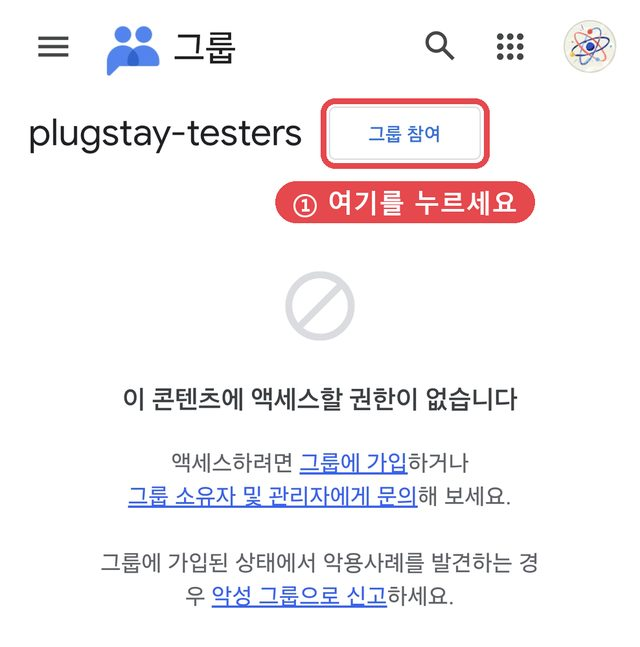
- 2한 번 더 "그룹 참여"를 누르세요가입 화면이 열리면 다른 건 그대로 두고 오른쪽 아래 "그룹 참여"를 눌러요.
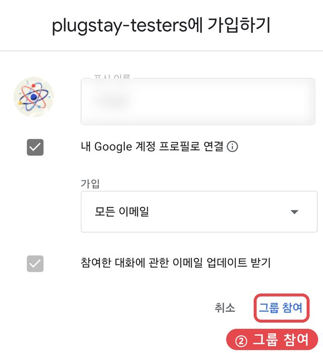
- ✓"아직 대화 없음"이 보이면 가입 완료그룹에 올라온 글이 없어서 이렇게 보이는 거예요. 더 누를 건 없으니 바로 아래 2단계로 넘어가세요.
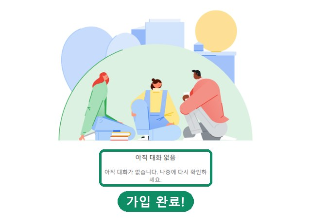
2. 테스터 되기
https://play.google.com/apps/testing/com.plugstay.app- 3"Become a tester"를 누르세요그룹에 가입한 직후라면 이 화면이 뜨기까지 몇 분 걸릴 수 있어요.
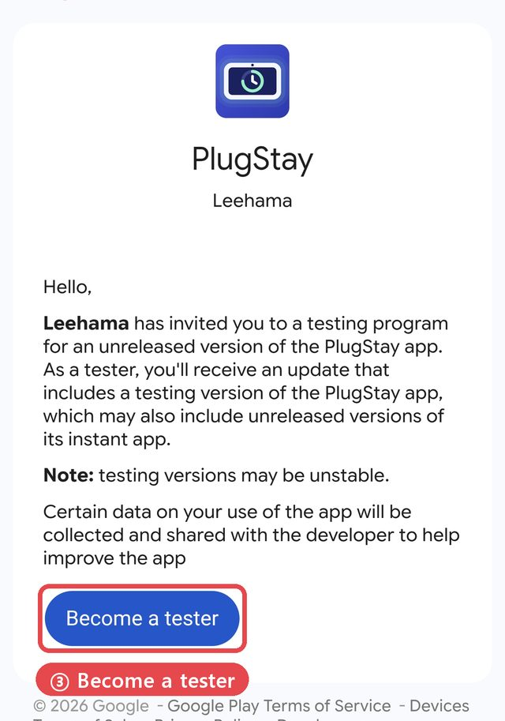
- ✓"You are a tester."가 보이면 완료이제 PlugStay를 설치할 수 있어요. 설치 링크에 앱이 보이기까지는 시간이 조금 걸릴 수 있어요.
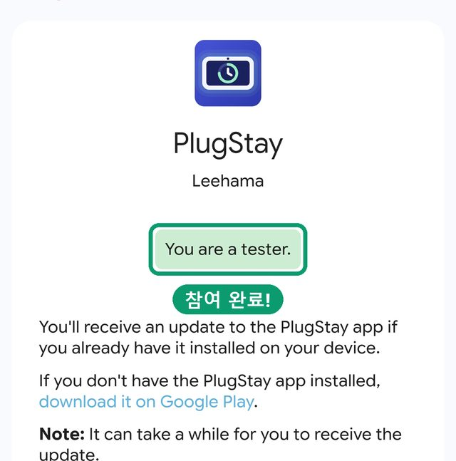
3. 설치하기
https://play.google.com/store/apps/details?id=com.plugstay.app- 4"설치"를 누르세요앱 이름이 "PlugStay(사전 체험판)"로 보이면 맞게 들어온 거예요.
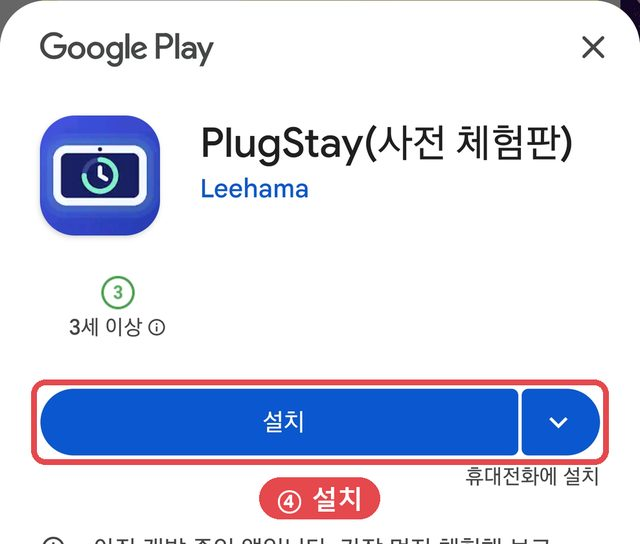
- 5"대기 중…"이 끝날 때까지 기다리세요다운로드가 시작될 때까지 조금 걸릴 수 있어요. 설치가 끝나면 앱을 열어 사용하세요.
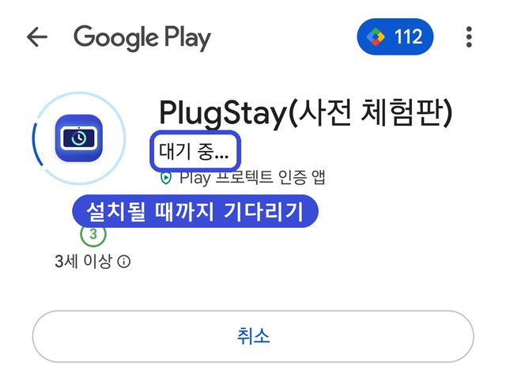
몇 시간이 지나도 설치 링크에서 "찾을 수 없음"이 뜨면 1·2단계를 다른 계정으로 했을 가능성이 커요. Play 스토어 오른쪽 위 프로필 계정을 확인해 주세요. 불편한 점이나 아이디어는 Play 스토어의 테스트 의견이나 leehama1236@gmail.com으로 보내주세요.
내 정보는 휴대폰에
광고, 분석 도구, 개발자 서버가 없어요. 개발자는 사용자의 어떤 정보도 받지 않아요.
날씨에는 대략적인 위치를, 가사 검색에는 곡 제목과 아티스트를 해당 서비스로만 보내요.
캘린더, 블루투스 기기, 알림 개수, 사진은 휴대폰 밖으로 나가지 않아요.